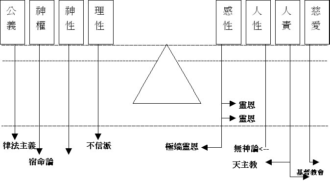
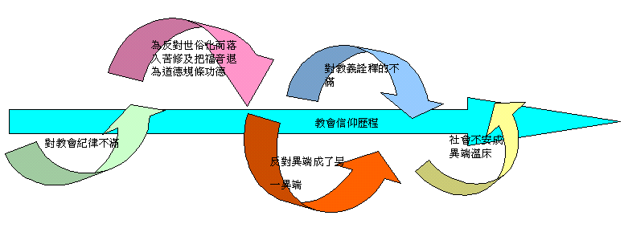
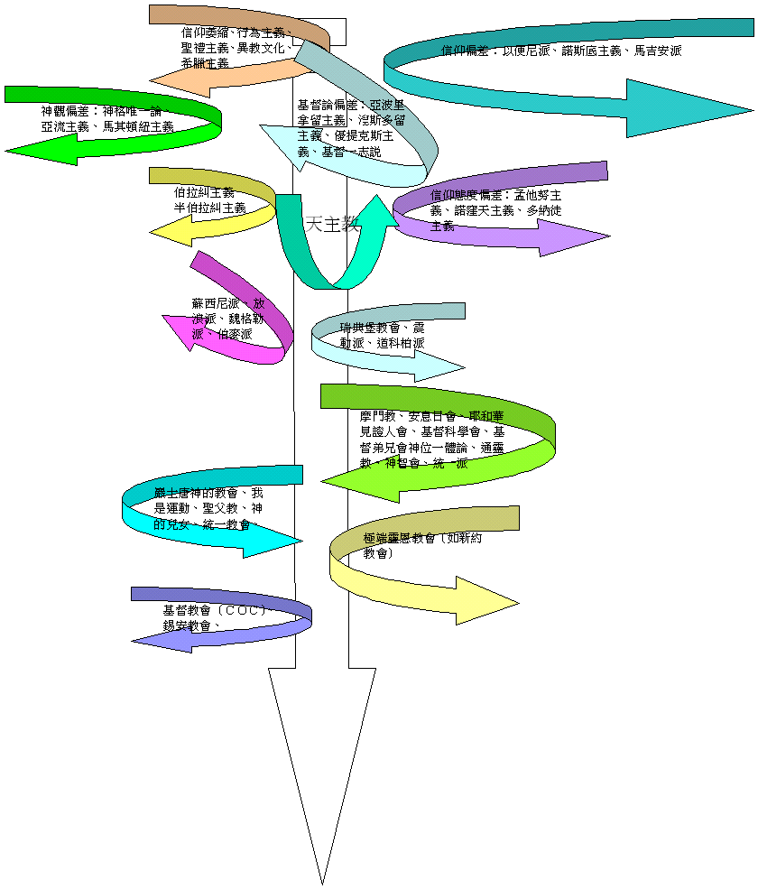

第一課：偏差溯源
引言：在信徒造就的課程中，我們曾學習過以聖經上一些明訓來作為判別異端的原則，但這次的課堂是在這些根基上再加深學習，除了按聖經來看個別異端的問題，更會剖析其成因及變質的過程，藉此作出深入的認識及鑑戒，免得我們落入迷惑或墮落至得罪 神。
Ａ）異端的背後
１）屬靈的爭戰
ａ）基督的警告
福音是 神給與世人的好消息，當一個人相信接受時就可以得著 神所應許的永生，在信人的人看這是極大的恩典，在不信的世人眼中為極可笑的愚昧稽談，但在魔鬼的眼中卻為極具侵略的事，因人認識福音就有機會脫離牠的轄制，相信接受福音就實在脫離牠的轄制，故魔鬼用盡辦法來阻擋人相信福音，一是使人硬心拒絕福音或害怕相信福音或輕看福音，二是使人錯信扭曲的福音。異端就是魔鬼使用的第二類方法，使人落入自欺的光境中，既在今生受壓，來生又受永刑。
主耶穌在馬太福音十三章中曾論及稗子的比喻，指出這樣的問題會一直持續至末世主再來之時，也在馬太福音廿四章中指出末後必有人會假冒基督的到來，故這是一場激烈的屬靈爭戰。
ｂ）聖靈的默示
早在使徒時代，聖靈已默示使徒們將末後的情形記在聖經中，警告及責備異端的興起及指出他們共有的特徵，給與後世信徒作為分別及判別的準則，但更重要的是使徒們要信徒堅定的持守所信的真理。因為異端的道理為經常變更；為的是混亂 神的道，唯有 神的道才是萬古常新的真理。
在現今的時代中，對異端的研究已有相當的探究，但仍趕不上日新月異的新新興異端，故最好是個人對聖經有深入的認識，並與 神建立一個緊密的關係，當面對異端時不致於無所適從，並可作出判別。
２）錯謬的替身
ａ）變質的真理
根據韋氏辭典：「異端是──一種被視為非統的或出自虛構的宗教；亦指一種少數派的宗教團體，其所持的信仰被視為非正統或出自虛構。」
據基督教神學的原則，異端是指一些自稱是基督教，或類似基督教的信仰，但與正統的教會所解釋的聖經真理有所矛盾的（將真理忽略或歪曲或以新啟示使正統核心信仰變了質）。
ｂ）攙雜的人意
神及福音的奧秘非人力所能明白，在歷史上常出現的問題是有限的人強要解說無限的 神，因而而加入了個人獨特的看法（錯謬），更甚的是把真理歪曲來遷就個人的理念，這樣的問題不獨出現在異端身上，也在正統教會的領袖身上，這些錯謬的思想往往成為日後異端依從的道路，他們各自把自己的觀念套入聖經中，作為解釋聖經的原則，因而創造出一種與聖經不同的教義。
異端主要是混亂 神的道，將信仰的核心杻曲了，如關乎稱義的問題，復活問題及三位一體。初期教會的信徒多為沒學問的百姓，為了使這大群會眾能應付異端、澄清信仰及宣講福音的緣故，故當代的教會領袖將使徒所傳的真理中重要的部份歸納為一些綱目，形成後來的信經的出現，這些信經在當代是作為個人信仰的表白，及給與信徒判別異端的準則。當中以使徒信經、尼西亞信經及亞他拿修信經所說明的為準。但這三大信經是經當代的教會領袖，仔細研究聖經及按正意分解真道而有的共悉。當然信經是沒有取代聖經地位的意圖，而是給與信徒一個簡便清晰的指引。
圖表（一）側重與偏差
| 正統信仰 |  |
|
| 偏差偏激極端
|
偏差偏激極端 | |
|
異端
|
普救論 |
３）不滿的情懷
許多異端依從的原則不是他們自己發明的，早在教會歷史裡已出現，只不過在當代獨特的環境裡未有空間及時間發展成異端而已，但卻在日後的處境中演變成為異端。
ａ）對靈性不滿：因信徒或教會世俗化，許多熱心的人為此焦急，因而作極力的反對及責備，高舉人的道德責任，因而把福音的大能退化成為道德原則，形成日後異端高舉個人功德而輕看 神恩典的危機。
ｂ）對教會不滿：初期教會對紀律問題有不一的看法，因而製造了內部分裂，近代異端也有對教會內的問題不滿而分離出去。
ｃ）對教義不滿：教會在受逼害過後，對於教義有更大的時間來鑽研，但由於人智力有限而強解真理下，因而產生諸多奇異的教訓，加上各方派別尋求政治勢力的助陣，異端問題更形複雜，不單是真理的問題，更是仇恨的問題。
ｄ）對異端不滿：異端的問題常是死灰復燃，不能澈底的根治，故有人為了急切的剷除異端而作出了激烈的言論，這些未經深思的激烈言論在日後傳遞過程中多番的演變，成了不可置疑的「真理」，因而成了異端信仰的根據。
ｅ）對社會不滿：異端的錯謬道理能廣受歡迎，也與當時代的局勢有關，許多錯謬的道理卻迎合人心的空虛及想望，因而給與異端有成長的空間。
Ｂ）異端的特徵

異端的目的是混亂主的道，特別關乎三位一體，主耶穌的神性、人性、救贖工作及得救的方法。否認三位一體的信仰，一則可產生泛神主義，異端便可藉此降低 神的地位，而與外邦宗教混和。二則可推翻主耶穌的神性或人性，則使主耶穌的救贖資格產生問題，從而在得救上加添其他的方法。近代的異端研究，將異端的特徵歸納為一些共通特徵，但未必每一個異端都同樣具備下列的特徵，某些會在某些地方上特別強調或明顯出錯。
１）教義的內容：
ａ）另有新權威：除聖經以外，他們另有新啟示作權威，以支持他們錯謬的道理，並且高過聖經的權威。
ｂ）貶低主基督：為直接否認基督的神性或人性，或否認三位一體的真理。間接也將其他條件、或人物、或禮儀高舉，變相貶低基督的唯一性，及祂的救贖的完全。
ｃ）奇特的教義：異端為要表示自己有新啟示，蒙 神特派，故多有有奇特教義。
ｄ）靠行為稱義：異端多以其他附加的方法作得救的條件，不是靠救恩白白稱義，而要加上人的行為才可以稱義。
２）教會的架構：
ａ）唯一的教會：均以他們為 神在末世黑暗中呼召出來的小群，為 神建立唯一真正的教會。
ｂ）強力的領袖：異端崛起多起於一頗具異才的領袖，他能以雄辯的口才，利害的文筆，精銳的思想，奇特的啟示來瘋魔群眾。
ｃ）獨裁的組織：異端領袖不單本身強而有力，其帶領之教會多是獨裁政體，以一切手段排除異己，嚴格要求會眾向他絕對順服，甚致發毒誓不可離開教會。
３）傳教的手段：
ａ）嚴格的訓練：異端均積極訓練每一信徒成為天天傳道且有高度效率的傳教士，故新加入的會員均施以嚴格的教義灌輸及傳教方法的訓練實習。
ｂ）熱心的傳教：異端會用盡各樣的辦法，引人入教，包括推廣教育、關懷社會、施贈慈愛、注重青年工作、提高婦女地位、看重肉體各方面需要等等，達致無孔不入的傳教策略。
ｃ）功利的動機：異端所以如此熱心，不理會旁人之異目，不但因深信末日的逼近眉睫而帶來強烈使命感，更重要是他們認為傳教工作乃得救的必需條件，此種功德主義促使初入異端教派者即時全人投上傳教行列。
４）教行的實踐
ａ）與世俗分別：強調聖潔及禁弁食物，高舉與世俗分別的生活。
ｂ）奉獻的人生：異端強調凡物共用，教導信徒過獻財獻身的生活。
ｃ）隱藏的罪惡：許多異端外表聖潔，內藏性慾解放，並以諸種教義為藉口，以美其名。
Ｃ）異端的崛起
